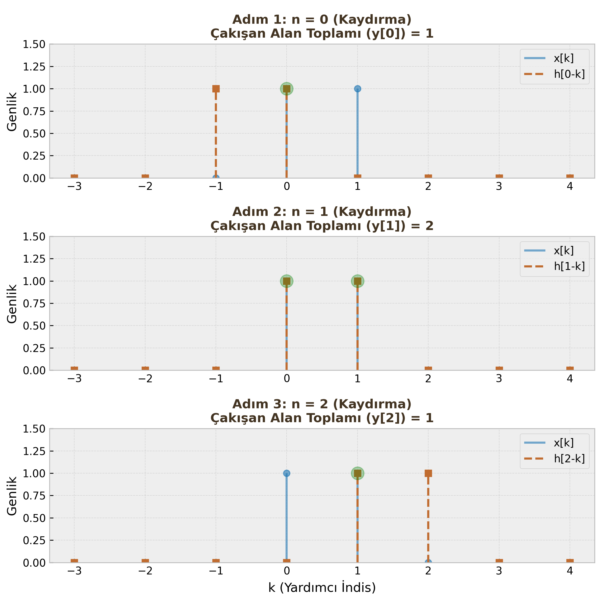

Konvolüsyon Toplamı (Convolution Sum)
Sayısal İşaret İşleme'nin (DSP) belki de en önemli matematiksel işlemi konvolüsyondur. Bir sistemin giriş sinyaline ($x[n]$) nasıl tepki vereceğini ve çıkışın ($y[n]$) ne olacağını hesaplamamızı sağlar.
Neden Konvolüsyona İhtiyacımız Var?
Doğrusal ve Zamanla Değişmeyen (LSI - Linear Shift Invariant) sistemlerin analizi için konvolüsyon hayati önem taşır.
Mantık şudur: Karmaşık bir giriş sinyali ($x[n]$), aslında peş peşe gelen bir sürü dürtünün (impulse) toplamıdır. Eğer biz sistemin tek bir dürtüye verdiği tepkiyi ($h[n]$) biliyorsak, süperpozisyon ilkesi sayesinde sistemin herhangi bir girişe vereceği tepkiyi hesaplayabiliriz.
Konvolüsyon, sistemin "karakteri" ($h[n]$) ile giriş sinyalinin ($x[n]$) matematiksel olarak "harmanlanmasıdır".
Tanım ve Formül
Ayrık zamanlı LSI bir sistemin girişi $x[n]$ ve dürtü cevabı $h[n]$ ise, çıkış $y[n]$ şu toplam ile bulunur:
$$y[n] = x[n] * h[n] = \sum_{k=-\infty}^{\infty} x[k]h[n-k]$$
Burada:
- $k$: Toplam sembolü içindeki "kukla" değişkendir. (İntegraldeki $d\tau$ gibi).
- $n$: Çıkış işaretinin zaman indisidir. Her bir $n$ değeri için bu toplam yeniden hesaplanır.
Birim Örnek Cevabı ($h[n]$) Nedir?
Bir sisteme giriş olarak Birim Dürtü ($\delta[n]$) uygulandığında alınan çıkışa Dürtü Cevabı (Impulse Response) denir ve $h[n]$ ile gösterilir.
$$x[n] = \delta[n] \implies y[n] = h[n]$$
Öğrenci Notu
Bir LSI sistemin $h[n]$'ini biliyorsanız, o sistem hakkında her şeyi biliyorsunuz demektir. Kararlılık, nedensellik ve frekans tepkisi $h[n]$'den çıkarılabilir.
Konvolüsyon Hesaplama Yöntemleri
Vize ve finallerde konvolüsyon sorusu üç farklı yöntemle karşınıza çıkabilir. Sinyallerin yapısına (sonsuz/sonlu, formül/dizi) göre uygun yöntemi seçmelisiniz.
1. Analitik Yöntem (Doğrudan Değerlendirme)
Genellikle $u[n]$ (birim basamak) veya $a^n u[n]$ gibi matematiksel fonksiyon olarak verilen sinyallerde kullanılır.
Adımlar:
- Formülde $x[k]$ ve $h[n-k]$ ifadelerini yaz.
- $u[k]$ ve $u[n-k]$ fonksiyonlarına bakarak toplam sembolünün ($\sum$) alt ve üst sınırlarını belirle.
- Geometrik seri toplam formüllerini kullanarak sonucu bul.
Örnek Soru: $x[n] = u[n]$ ve $h[n] = \alpha^n u[n]$ ($0 < \alpha < 1$) ise $y[n]$ nedir?
Çözüm: Formülü yazalım: $$y[n] = \sum_{k=-\infty}^{\infty} u[k] \cdot \alpha^{n-k} u[n-k]$$
Sınırları belirleyelim:
- $u[k] \neq 0$ olması için $k \ge 0$ olmalı. (Alt sınır $k=0$)
- $u[n-k] \neq 0$ olması için $n-k \ge 0 \implies k \le n$ olmalı. (Üst sınır $k=n$)
- Dikkat: Eğer $n < 0$ ise üst sınır alt sınırdan küçük olacağından sonuç 0'dır. Yani işlem $n \ge 0$ için geçerlidir.
$$y[n] = \sum_{k=0}^{n} \alpha^{n-k} = \alpha^n \sum_{k=0}^{n} (\alpha^{-1})^k$$
Geometrik seri toplam formülü ($\sum_{k=0}^{N} r^k = \frac{1-r^{N+1}}{1-r}$) uygulanırsa: $$y[n] = \frac{1 - \alpha^{n+1}}{1 - \alpha} u[n]$$
2. Grafiksel Yöntem (Görselleştirme)
Konvolüsyonun mantığını anlamak için en iyi yöntemdir. 4 adımda uygulanır: Ters Çevir $\to$ Kaydır $\to$ Çarp $\to$ Topla.
Algoritma:
- Değişkeni $n$'den $k$'ya çevir. Eksenleri $k$ ekseni yap. ($x[k]$ ve $h[k]$).
- Ters Çevir: $h[k]$ sinyalini $k=0$ eksenine göre aynala. ($h[-k]$ elde edilir).
- Kaydır: $h[-k]$ sinyalini $n$ kadar kaydır. ($h[n-k]$).
- Çarp ve Topla: $x[k]$ ile kaydırılmış $h[n-k]$'nın çakıştığı yerleri çarp ve topla. Bu sana o anki $y[n]$ değerini verir.

Örnek Soru: $x[n] = {1, 1}$ ($n=0,1$'de) ve $h[n] = {1, 1}$ ($n=0,1$'de). Grafiksel yöntemle çözün.
Çözüm:
- $n=0$: $h[-k]$ hiç kaymadı. $x[0]$ ile $h[0]$ çakışır. $\sum = 1 \cdot 1 = 1$.
- $n=1$: $h[1-k]$ bir sağa kaydı. $x[0]h[1]$ ve $x[1]h[0]$ çakışır. $\sum = (1\cdot 1) + (1\cdot 1) = 2$.
- $n=2$: $h[2-k]$ iki sağa kaydı. $x[1]h[1]$ çakışır. $\sum = 1 \cdot 1 = 1$.
- Sonuç: $y[n] = {1, 2, 1}$.
3. Tablo (Kaydırma) Yöntemi
Kısa ve sonlu uzunluktaki diziler için en pratik sınav yöntemidir.
Örnek Soru: $x[n] = [1, 2]$ (Orijin $1$'de) $h[n] = [1, -1]$ (Orijin $1$'de) $y[n]$ çıkışını bulunuz.
Çözüm Adımları:
- $h[n]$ dizisini ters çevir: $h[-k] = [-1, 1]$.
-
Bu ters diziyi $x[n]$'in altından bir şerit gibi kaydırarak çakışanları çarpıp topla.
-
Adım 1 ($n=0$):
x[k]: 1 2 h[0-k]: -1 1 (Sadece 1 ile 1 çakıştı) ---------------- y[0] = 1*1 = 1 -
Adım 2 ($n=1$): (h şeridini 1 birim sağa kaydır)
x[k]: 1 2 h[1-k]: -1 1 (1 ile -1, 2 ile 1 çakıştı) ---------------- y[1] = (1*-1) + (2*1) = 1 -
Adım 3 ($n=2$): (h şeridini 1 birim daha sağa kaydır)
x[k]: 1 2 h[2-k]: -1 1 (Sadece 2 ile -1 çakıştı) ---------------- y[2] = 2*-1 = -2
Sonuç: $y[n] = {1, 1, -2}$.
Kritik Sınav Bilgisi
Konvolüsyon sonucunun uzunluğu ($L_y$), giriş sinyallerinin uzunlukları toplamından 1 eksiktir. $$L_y = L_x + L_h - 1$$ Yukarıdaki örnekte: $L_x=2, L_h=2 \implies L_y = 2+2-1 = 3$. Sonucunuzun eleman sayısını bu formülle mutlaka kontrol edin!
Konvolüsyonun Özellikleri
Matematiksel işlemlerde kolaylık sağlayan temel özellikler:
-
Değişme (Commutative): Sıra önemli değildir. $$x[n] * h[n] = h[n] * x[n]$$ Tüyo: Hesaplaması zor olan sinyali sabit tutup, kolay olanı (daha az elemanlıyı) kaydırmak sonucu değiştirmez.
-
Birleşme (Associative): Seri bağlı sistemlerde kullanılır. $$(x[n] * h_1[n]) * h_2[n] = x[n] * (h_1[n] * h_2[n])$$ Tüyo: Seri bağlı iki sistemin dürtü cevaplarını önce kendi aralarında konvolüsyona sokup tek bir sistem ($h_{eq}$) gibi düşünebilirsiniz.
-
Dağılma (Distributive): Paralel bağlı sistemlerde kullanılır. $$x[n] * (h_1[n] + h_2[n]) = x[n] * h_1[n] + x[n] * h_2[n]$$